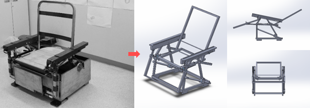
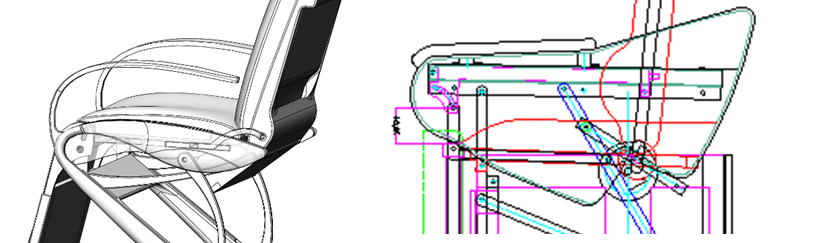

Products and Solutions
The Design of Personal Protective Garments for Workplace: An Ergonomic Radiation Protection Design Practice
Personal protective garments are commonly used to protect workers from direct and secondary radiation in radiological workplaces. Traditionally, these garments are manufactured using heavy shielding chemical materials, such as lead or lead composite mixed with binders and additives to make lead loaded vinyl sheets. The materials used in such garments are toxic, subject to rapid decline, and cause lead poisoning and heat gain that create moisture inside the garments. These garments are heavy in weight, causing a higher risk of musculoskeletal injuries and workers’ fatigue and discomfort, which results in low productivity due to ergonomic detriment. We designed an ergonomic personal protective garment with a lightweight flexible structure and optimal shielding performance after a thorough examination of the existing safety in the workplace, worker’s tasks and exposure to radiation, and weight and type of the materials used in the existing garments. Our study suggests that a lightweight and flexible design factor that could improve workers physical activities and body movement by considering ergonomic design could increase productivity in radiological workplaces.
Nuclear power plants have both positive and negative effects on workers and local populations. The release of gases, radiation, and soil and water pollution are negative effects that cannot be ignored. However, workers are highly exposed to radiation and experience severe health problems related to radiation doses. Personal protective garments are commonly used to protect workers from direct and secondary radiation in radiological sectors, such as nuclear reactors and power industries. Traditionally, these garments are manufactured using heavy shielding chemical materials, such as lead shielding or lead composite shielding mixed with binders and additives to make lead loaded vinyl sheets. However, the materials used in such garments are toxic and subject to rapid decline, which requires a special disposal procedure. In addition, these garments are heavy in weight, causing a higher risk of musculoskeletal injuries and workers’ fatigue and discomfort, which results in low productivity due to ergonomic detriment caused by the garments. Moreover, a lead-based garment can cause lead poisoning and heat gain that creates moisture inside of the garment.
Based on a thorough investigation of the workplace and its workers, we designed an ergonomic personal protective garment with a lightweight flexible structure and optimal radiation-shielding performance. The existing safety and workers’ productivity are subject to the amount of radiation-shielding abilities and weight of the garments, and different levels of shielding are required depending on the radiation dose. Thus, the garments should be flexible with a weight that does not affect workers’ productivity. The main components of radiation-shielding garments are a lead vest and lead genital protectors with disposable gloves and a dosimeter to measure the radiation dose. Most garments are made of vinyl or waterproof fabric, which are easy to clean and reuse. However, the type of material used in the garments are typically lead vinyl, which is made by mixing lead powder with vinyl liquid to form a smooth plate enclosed in a lighter fabric. Some garments are lightweight, nontoxic, and lead free, but their shielding performance is low. In our proposed design, we used a nano-tungsten powder-filled polymer, which is a nontoxic and lead-free radiation-shielding material. The nano-tungsten powder in the polymer provides high protective characteristics against ionizing radiations, such as X-rays, gamma rays and thermal neutrons.
Our design is based on three layers with special consideration of specific postural adjustment and ergonomic conditions. In layer 1, we designed the inner part with a protective vest for the thorax and abdomen, the size of which is adjustable through the rear belt. In layer 2, we designed a front plate with a buckle to provide additional protection. In layer 3, we designed a back plate with a buckle to provide protection to the back. In this layer, helmet, goggles, an oxygen respirator, and a gas mask can also be added.
This study suggests three important design factors that can be considered in the de-sign of a lead garment for radiological workplaces: a lightweight and flexible design to enhance work efficiency, a design with shielding capability to increase shielding performance, and improvement of workers’ specific postural adjustment considering ergonomic design.
In general, personal protective garments are made of vinyl or waterproof fabric that is easy to keep clean and available to a wide variety of people. The type of material used in such garments can be divided into lead vinyl, which is made by mixing lead powder into vinyl liquid and making it into a flat plate, and covering fabric, which is lighter than lead vinyl. They are expensive because they are subject to expensive compression molding processes. Recently, the use of nano-tungsten powder in polymer resins has become popular, which is advantageous in terms of price competitiveness and mass production due to its elimination of harmful effects and ability to apply the extrusion process instead of the expensive compression molding process. Moreover, this material has less of a chemical fragrance, superior elasticity, and flexibility compared to ordinary rubber plates (see Figure below).
We thoroughly examined this material and its processes and principles of radiation. Based on the Nuclear Safety Standards Act and the Enforcement Decree of the Nuclear Safety Research Institute, the safety and facility standards for the actual radioactive works were also examined. The radioactive disaster response facilities and reference facilities for the equipment were also considered.
We considered design factors for the vest structure in areas such as neck, shoulder joint and waist movement and a combination of front-back and vertical rotation (See Figure below).
As shown in Figure below, our proposed design consists of three levels. In level 1, the sus-pended belt is fixed on the garment’s lower part so that it can safeguard the lower parts of the body. In addition, this design holds the protective vest for the thorax and abdomen, the size of which is adjustable through the rear belt. In level 2, the wearer can fasten the front plate for additional protection in front. The level 3 design pro-vides additional protection on the back where the back plate is fixed. This level also includes oxygen respirators and a gas mask with a helmet.
With the overall sketch of the proposed design, we improved the final product with additional protection (See Figure below). For example, we fixed the lack of protection of the neck and thyroid by adding a collar to each side of the vest. In addition, we fixed the difficulty in adjusting the size of the toe, as previously, this made it difficult to work. Moreover, we added a zipper line to the top that should be padded on the upper side to cover the inside to minimize its interference with work because in most cases, work-ers attempt to adjust and fix the garment during work.
Personal protective garments with a vest or skirt configuration are opted for by many operators and workers to minimize risks associated with radiation. Due to the ergo-nomic risks of garments with leaded aprons that increase fatigue and discomfort associated with wearing heavy protective garments, we present an ergonomic radiation-protection design practice. As such, we mainly focused on three important design factors for a personal protective garment: a lightweight flexible design, a design for enhanced shielding performance, and an ergonomic design to improve workers’ specific postural adjustment. We believe that our proposed design holds promise for improved ergonomics and safety. We demonstrated the final product to experts in the radiation-protection field, and they positively rated the product and the proposed design. In future work, we will evaluate the current product with operators and workers in radiological workplaces to understand its usability to further improve the design.
This design activity suggests that garments with a lightweight flexible design and enhanced shielding performance can increase workers’ productivity in radiological workplaces. However, radiation safety measures should comply with local and domestic regulation authorities to consider ergonomic importance and postural adjustment associated with current personal shielding garments. Moreover, management and authorities of radiological workplaces should also examine the current radiation-shielding practices for ergonomic hazards and improved safety by adopting standardized lead-free protective aprons to increase work efficiency in the workplace.
This design activity is supported by the Ministry of Education and National Research Foundation of the Republic of Korea (NRF-2015S1A5A8010614). The work is also supported by the Promotion of Special Design-Technology Convergence Graduate School of Korea Institute of Design Promotion with a grant from the Ministry of Trade, Industry & Energy of the Republic of Korea (N0001436).
The Design of Ergonomic Structured Recliner using Integrated Design Process
This design activity presents a design approach that uses internal functional elements as external form elements through the development of a recliner. This approach has to take more into consideration than conventional methods in the integrated design process, which allows for designing something that offers unique and distinguished implications as the principle of primary function that should be expressed in the form. This integrated approach is expected to serve as a guideline in making a new attempt to design something that removes the boundary between internal design and external design. This should be done by actively integrating the internal function component design and the external design in a product.
Generally, there are two main approaches in product design: the inside-out approach to create an internal structure with product-working functionality (layout and functional structure), and implement a human using functionality (form, user experience) on working functionality; and the outside-in approach that considers a human using functionality first, and implements the product working functionality elements. Thus, the existing product development approach typically goes through the process of developing and completing the internal and external designs alone. However, using the internal structure as an external element typically increases the overlapping area between the internal and external designs, which makes it difficult to implement alone. In some cases, original design can be achieved by implementing the design process in an integrated approach. That is, a new design principle or form can be achieved when developing internal functional elements and external forms developed in a simultaneous and integrated approach. This study explores the case of a design process in which engineers typically complete the internal design, while the external design is performed by industrial designers, which is naturally done via an integrated approach. To this end, we developed the design of a recliner driven by mechanical configuration.
Unlike other chairs, a recliner allows users to adjust the angles of the backrest and the leg rest. The mechanical functional parts that enable such positions to occur are normally hidden on the inside, which is usually wrapped by an exterior cover. Therefore, it is typical to design the internal functioning parts to work as intended, followed by wrapping the exterior with such materials as leather or fabric. This is a typical example of the inside-out design process mentioned by Kim and Lee. On the other hand, you may also design the external use or form before having functional elements arranged on the inside, which is known as the outside-in design approach.
To explore the different processes described above, we have developed a new type of functional chair, using the reclining technology provided by a local company. This research describes the processes and results of the inside-out design approach applied to a recliner’s design and the integrated design approach featuring the integration of internal design and external design, as well as the experiential lessons and insights gained from carrying out these two processes.
In the initial stage of the project, we were provided with a real model and its design drawing for the purpose of verifying the operating mechanism (see Figures below). The two key technical mechanisms have been adopted to implement this product: The one that reclines the chair backward or unlocks the chair by the motion and force exerted by a user, and the other that transforms the chair to help a user stand up from his or her body weight being exerted on it (see Figure below).
The structure of the real model is designed to be slightly transformed by the spring tension while it is fixed by the latch. In addition, if a user exerts force on the footrest and stands with the side lock released, the structure is transformed to rise, which makes it easier for the older adults with weak legs to stand out of the chair (see Figures below).
The real model for verification (see Figure above) has a back function that allows one to sit and stand, but is also a structure built by welding metal parts and tightening bolts; so, we had to work on the internal design and exterior design processes. First, we ana-lyzed and measured the given structure to generate 3D CAD data (see Figures below). This digitized data can be easily modified and improved, as opposed to the actual product or drawing. Another advantage is it allows one to perform simulated verification prior to adapting a complete design to the real product.
|  |
We developed a design based on the 3D CAD modeling data. First, we came up with the basic form related to the chair based on the given frame, and then we devel-oped more specific ideas for the external appearance and the internal mechanism of the chair (see Figure below). We attempted the inside-out approach, which wraps the exterior of the internal structure, and the integrated approach, which involves the internal and external designs.
To determine the initial direction of design development, we developed three dif-ferent types of designs—A, B, and C, as shown in Figure below—based on our sketches. Type A and type B have taken the inside-out approach of first defining the internal frame structure and then covering it with exterior material. On the other hand, type C has the internal structure itself reorganized and rearranged with external elements. We decided to proceed with the detail design development for type A and type C upon completion of evaluating the overall design quality with the client
Type A has taken the inside-out approach that starts with the internal design, fol-lowed by the external design based on it, while type C has adopted the integrated design method that performs internal and external designs at the same time. The following is a detailed description of these two design approaches. 1. Type A – Inside-out design process. Based on the internal structure that is previously been developed, type A had determined the size of the exterior designed to cover the internal structure with the exterior appearance sketched on it. Upon determination of the exterior sketch, a 3D shape has been implemented on the 3D CAD modeling of the internal structure. This is a typical example of the inside-out approach, characterized by designing the internal functional elements followed by the exterior appearance. Figure below shows the detailed designing and operating simulation of type A. As illustrated in figure below, type A shows a structure in which the external material wraps around the internal structure
2. Type C – integrated design. Below Figure shows the final result of type C’s design. Un-like type A featuring a closed internal structure with the entire internal structure covered by the exterior, this type has attempted to create a visible internal struc-ture, which is also used as an aesthetic element (see Figure below). Since this process does not allow external and internal designs to be carried out separately, we had to pro-ceed with an integrated design approach to design both simultaneously.
First, we fixed the original structure components’ axes on the drawing of the 3D CAD space and designed the shape of the frame based on it. The original structure has a straight-line frame, as shown in Figures above. Type C’s model has been rede-signed to have the frame shaped as a curve and to implement movement the same as the original structure by adapting the axes and the motion trajectory to those of the original, though the frame shapes are different from each other. Type C’s development process can be regarded as an integrated design process that simultaneously designs internal and external elements by taking the inside-out/outside-in approach of Kim and Lee (See our publications page). Since the frame of the internal element serves as an external element as well, both elements must be taken into consideration. The structure of type C (left) and the initial structural drawing (right) are presented in Figure above. Both have the same mechanism with identical structural movements. Noticea-bly, however, the forms of structural elements that comprise the mechanism are different.
|  |
We sought to implement the functional structure responsible for the movement, while maintaining the structure and movement in the design process. However, a variety of errors caused by changes in operating the structure—including unexpected jams due to distorted form of frame and discrepancies in component size—had to be constantly corrected. These difficulties were inevitably caused by having to consider the operating structure and the exterior at the same time. However, we had relatively fewer difficulties in type A, as the order of defining the internal structure and exterior as part of the inside-out process applied to type A was linear, with elements to be defined and clearly identified.
In general, a product design must take into account the engineering design and the industrial design. This is all the more so for mobile products, such as a recliner, as a variety of impacting factors—including operational orbit, spatial interference by operation, friction, and power transmission, in addition to the arrangement of internal parts—must be considered in a comprehensive manner during the design process.
This study has carried out two different design approaches: 1) the inside-out ap-proach, characterized by designing an internal structure followed by covering it; and 2) the integrated approach that simultaneously designed the internal and the external structures to have the internal structure exposed and used as an external element. Most product developments take the first approach, or the outside-in method, but some products, such as a recliner and other furniture, take the integrated design approach with a positive possibility of implementing new challenging external elements that cannot be easily accomplished by the inside-out or the outside-in approach. This requires designers and design teams to be equipped with a capacity to fully understand and apply the structure while meeting market needs in terms of external appearance.
As in the development of type C, the integrated design approach is suitable to de-sign a product with an external element used as part of the internal structure. Design-ing the internal structure and the detailed elements of parts with the exterior requires more effort than the inside-out or outside-in approach, where the design process is linearly conducted on a step-by-step basis. Via the step-by-step basis, working on elements one after another opposes carrying out design implementation in an integrated manner. This is because the existing inside-out or outside-in design approach is a method of having the external element match the completed internal structure—or vice versa—while the integrated approach must take all elements of the design process, including internal and external ones, into simultaneous consideration. Therefore, the latter significantly increases the number of elements taken into account by a designer at a given time. On the flip side, it allows the designer to come up with new possibilities when creating something not easily achievable from conventional design approaches. This especially arises from attempts to harmonize the internal structure and the exterior.
This project is supported by the Ministry of Education and Nation-al Research Foundation of the Republic of Korea (NRF-2015S1A5A8010614). The work is also supported by the Promotion of Special Design-Technology Convergence Graduate School of Korea Institute of Design Promotion with a grant from the Minis-try of Trade, Industry & Energy of the Republic of Korea (N0001436).